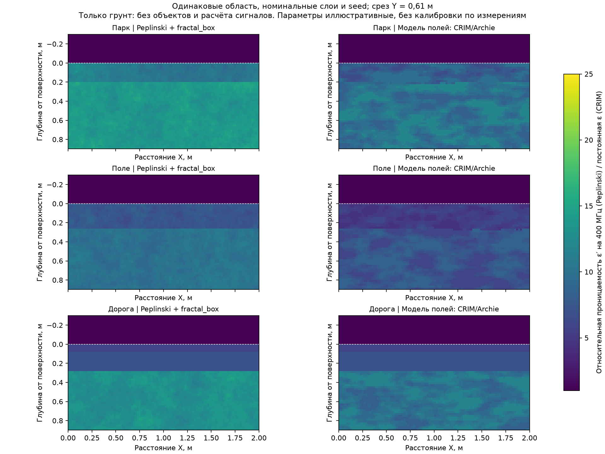
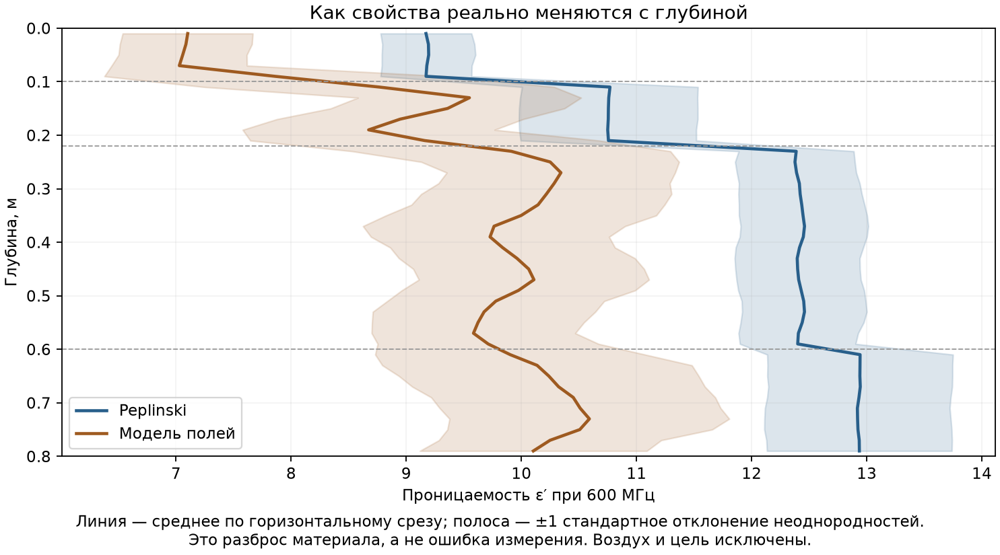
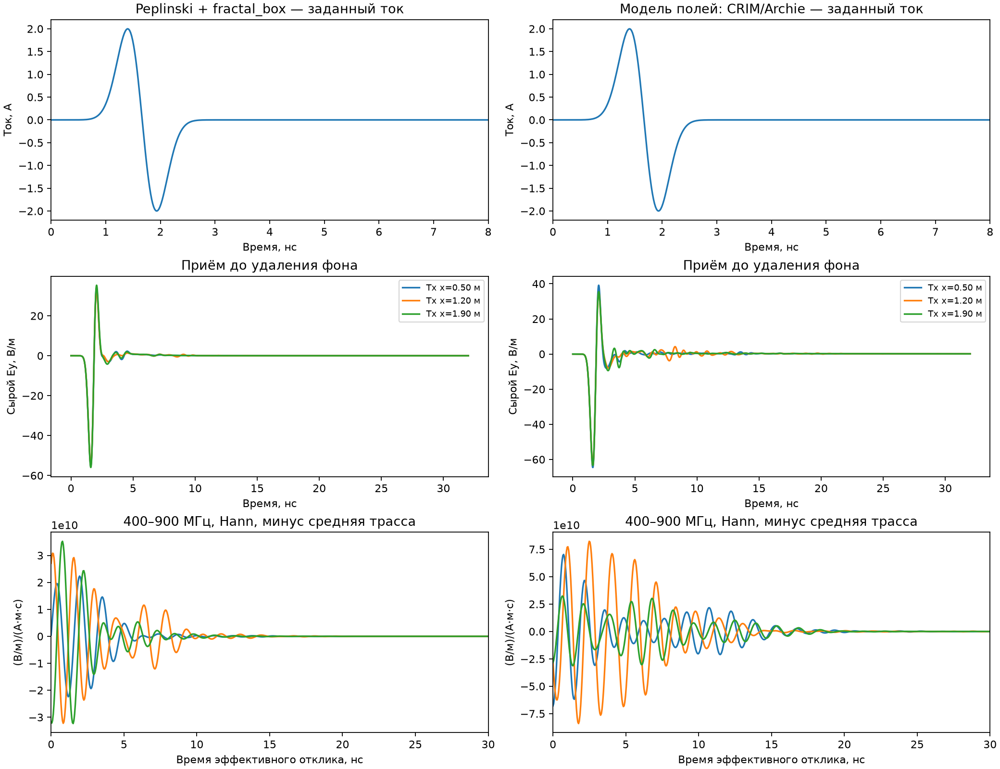
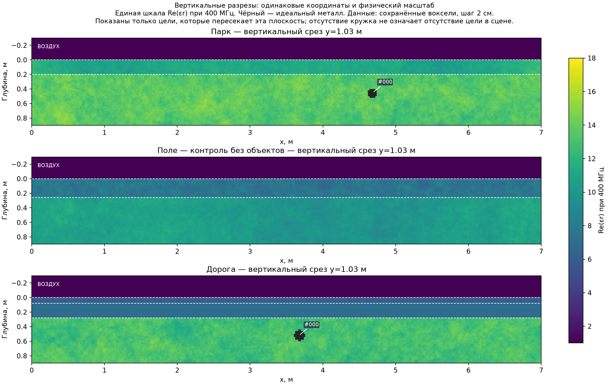
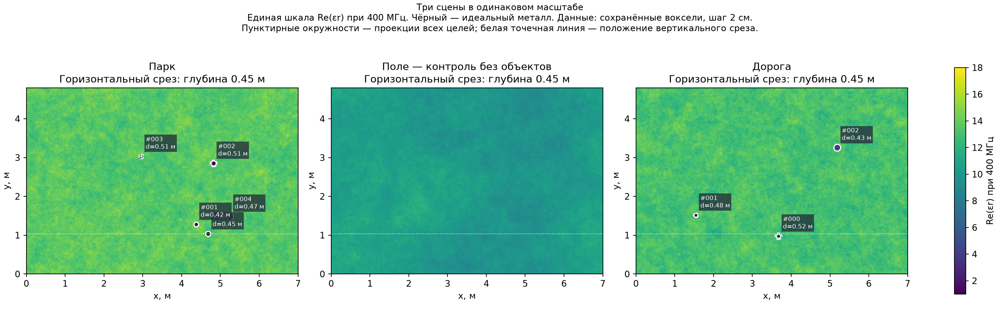
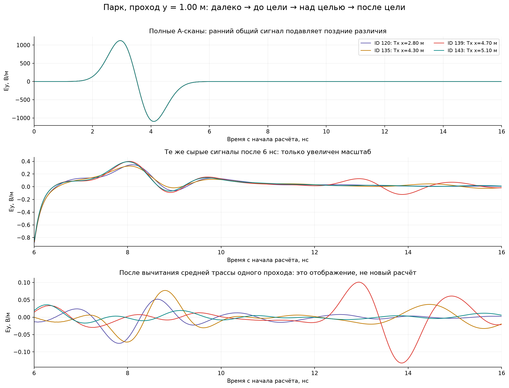
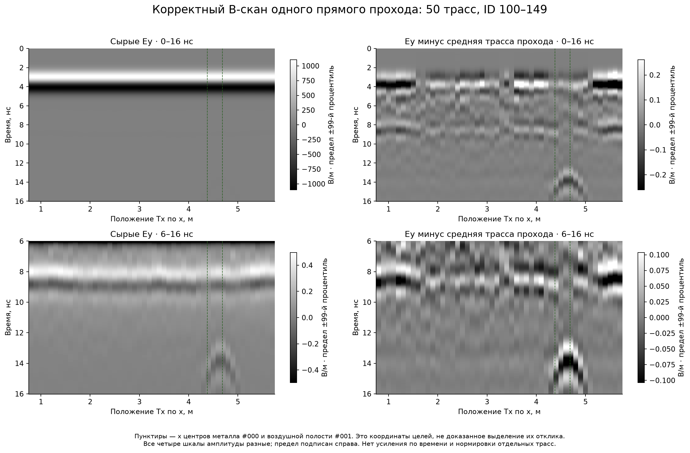

От сцены до радарограммы
Установить проект, настроить свой опыт, рассчитать сигналы и открыть результат. Готовые изображения собраны ниже на этой же странице.
Установка и первый запуск#
Нужны Git и Python 3.12 или 3.13. Основной путь рассчитан на macOS и Linux; в Windows используй WSL2. ParaView устанавливается отдельно и нужен только для просмотра 3D-геометрии.
Скачай проект и подготовь окружение
git clone https://github.com/bySaf/geodatagen.git cd geodatagen bash scripts/setup.sh source .venv/bin/activateСкрипт создаёт окружение
.venvи устанавливает зависимости. При следующем открытии терминала достаточно снова активировать окружение.Открой документацию
python geodatagen.py docsОткроется эта страница. Её также можно открыть двойным щелчком по
user_review/index.html— интернет и сборка сайта не нужны.Создай первый опыт и проверь одну трассу
python geodatagen.py init park-demo --mode custom_crim_archie python geodatagen.py run park-demo --limit 1 python geodatagen.py plot park-demo python geodatagen.py docs park-demoВсе настройки и результаты этого опыта находятся в
experiments/park-demo/. После одной трассы уже можно проверить A-скан; полноценный B-скан появится после расчёта маршрута.Досчитай остальные позиции
python geodatagen.py run park-demo python geodatagen.py plot park-demo python geodatagen.py docs park-demoПовторный запуск продолжает опыт с незавершённых позиций. Расчёт волн занимает время; открытие документации или построение графиков не запускает новую симуляцию.
В PyCharm: открой папку geodatagen целиком. В настройках интерпретатора выбери .venv/bin/python. Команды выше выполняй во вкладке Terminal из корня проекта.
Один опыт — одна папка#
Имя после команды — имя эксперимента. park-demo, park-wet и park-no-target сохраняются раздельно, поэтому настройки и сигналы не перемешиваются.
experiments/park-demo/
├── index.html страница с результатами этого опыта
├── config.json сохранённые настройки
├── objects.json фактические координаты объектов
├── positions.npz координаты Tx и Rx
├── scene_layout.png план и разрез расположения объектов
├── soil_slice.png разрез физических свойств грунта
├── scene/
│ ├── scene.in описание сцены gprMax
│ ├── scene.vti геометрия и поля для ParaView
│ └── … материалы и геометрия расчёта
├── bscan.h5 численные сигналы и ось времени
├── ascan.png отдельная готовая трасса
├── bscan.png радарограмма готовых позиций
├── progress.json сколько позиций рассчитано
└── PARAVIEW.txt памятка по открытию геометрииinit создаёт геометрию и стартовую страницу. run считает волны и обновляет графики. plot позволяет пересобрать графики и страницу опыта отдельно. Сохрани всю папку эксперимента, чтобы передать и картинки, и исходные данные.
Меняешь условия — создавай новое имя. Правка готового objects.json не перемещает объект в уже рассчитанной сцене. Отредактируй входной JSON, затем создай новый эксперимент.
Основные команды#
| Команда | Результат |
|---|---|
init park-demo --mode custom_crim_archie | Создать сцену с моделью полей. |
init park-native --mode native_peplinski | Создать отдельную сцену со штатным грунтом gprMax. |
run park-demo --limit 1 | Рассчитать максимум одну новую трассу. |
run park-demo | Продолжить расчёт всего маршрута. |
status park-demo | Показать количество готовых трасс. |
plot park-demo | Обновить A- и B-сканы и страницу опыта. |
export park-demo | Обновить геометрию VTI и страницу для просмотра. |
docs park-demo | Открыть результат конкретного опыта. |
Остановить расчёт и затем продолжить
Команда остановки создаёт файл STOP внутри нужного опыта. Текущая трасса закончится, после неё расчёт остановится:
python geodatagen.py stop park-demoПродолжить с оставшихся позиций:
python geodatagen.py run park-demo --resumeОбъекты и координаты#
Сначала сделай свою копию настроек, открой её в PyCharm и измени список objects.
mkdir -p configs
cp examples/park-objects.json configs/my-park.json"objects": [
{"type": "metal", "center_m": [1.20, 0.60, 0.45], "radius_m": 0.06},
{"type": "air", "center_m": [1.65, 0.60, 0.50], "radius_m": 0.08}
]center_m — координаты центра [X, Y, Z] в метрах. X и Y задают положение на плане, Z растёт вверх. В маленьком парковом опыте поверхность находится на Z = 0.80 м: центр Z = 0.45 м означает глубину 35 см. Радиус 0.06 м — это диаметр 12 см.
| Тип | Что получится |
|---|---|
metal | Идеально проводящая сфера. |
air | Шарообразная воздушная полость. |
dielectric | Сфера с εr = 4 и проводимостью 0.001 См/м. |
Добавь элементы списка для новых целей. Для опыта без объектов задай "objects": []. Чтобы объект попал под стандартный прямой маршрут, используй Y около 0.60 м.
python geodatagen.py init my-park --config configs/my-park.json --mode custom_crim_archie
python geodatagen.py docs my-parkДо расчёта проверь расположение на scene_layout.png или в ParaView. Проверки не допускают пересекающиеся сферы и цели слишком близко к поверхности, краям и поглощающей границе. Сейчас этот вход поддерживает сферы; труба, корень или плита требуют другой геометрии.
Два способа построения грунта#
| Режим | Как устроен грунт |
|---|---|
native_peplinski | Штатные Peplinski и fractal_box gprMax: неоднородная влажность в слоях, плоские границы, частотно-зависимые свойства. |
custom_crim_archie | Модель полей: связанные пятна свойств, настраиваемые размеры неоднородностей и неровные внутренние границы; свойства через CRIM/Archie. |
Слои перечислены сверху вниз в preset.layers. Оба режима создают случайный грунт, но используют разные законы его свойств. Один только более выразительный рисунок не означает более точную модель.
| Настройка | Что менять |
|---|---|
thickness | Толщину слоя в метрах. Сумма толщин должна совпадать с grid.surface_z. |
sand, clay | Доли песка и глины. Остаток — пылеватая фракция. |
bulk_density | Сухую объёмную плотность, г/см³. |
water_min, water_max | Объёмную влажность: 0.20 означает, что вода занимает 20% объёма грунта. |
custom.correlation_m | Размеры связанных пятен по X/Y/Z, например [0.25, 0.25, 0.06]. |
custom.roughness_rms_m | Неровность внутренних границ; например 0.02 м. |
seed | Номер случайной реализации. Для сравнения одного изменённого фактора сохраняй прежний seed. |
У Peplinski water_min/max ограничивают диапазон влажности. У модели полей они задают исходные среднее и разброс: местные значения могут выходить за интервал, оставаясь в пределах доступного объёма пор. Во время прохода грунт не меняется.

Источник и маршрут#
Tx передаёт импульс, Rx записывает поле в своей точке. Здесь используются идеальные источник и приёмник: корпус, электроника и калибровка конкретного георадара в эту постановку не входят.
| Параметр | Смысл |
|---|---|
source.frequency_hz | Параметр частоты импульса: 600000000 = 600 МГц. |
source.height_m | Высота над землёй: 0.02 = 2 см. |
source.tx_rx_offset_m | Разнос Tx/Rx по X: 0.10 = 10 см. |
profile.x_start_m, x_end_m | Начало и конец прямого прохода передатчика. |
profile.step_m | Шаг позиций: 0.05 = 5 см. |
profile.y_m | Положение линии прохода на плане. |
grid.time_window | Длительность записи: 3.2e-8 = 32 нс. Это время, не глубина. |
sfcw | Полоса дополнительной обработки сигнала в частотной области; она не заменяет модель электроники ступенчатого прибора. |
Меньший шаг даёт больше трасс и более плавную радарограмму, но увеличивает время расчёта. Для первого опыта оставь размеры области и сетки как в примере.
Как открыть эксперимент в ParaView#
ParaView показывает геометрию и свойства сцены. A- и B-сканы смотри на странице эксперимента или в PNG. Установить ParaView можно с официального сайта.
Подготовь файл геометрии
python geodatagen.py export park-demoФайл для открытия:
experiments/park-demo/scene/scene.vti. Он создаётся и при начальной подготовке опыта.Открой объём
Запусти ParaView → File → Open → выбери
scene.vti→ OK → зелёная кнопка Apply. Нажми Reset Camera, если область не попала в кадр.Сделай вертикальный разрез вдоль маршрута
Выдели
scene.vtiв Pipeline Browser. Выбери Filters → Common → Slice. Для стандартного опыта задай Origin = [1.2, 0.6, 0.4], Normal = [0, 1, 0], затем Apply. Это плоскость X–Z через маршрут Y = 0.6 м.Выключи «глаз» у исходного объёма, чтобы он не закрывал разрез. Выключи Show Plane, чтобы убрать рамку инструмента.
Выбери, что раскрашивать
В верхнем списке Color By выбери
epsilon_realи нажми Rescale to Data Range. Для вида спереди на разрез нажми кнопку взгляда вдоль оси Y.
| Поле VTI | Что означает цвет |
|---|---|
epsilon_real | Действительная часть относительной диэлектрической проницаемости на частоте источника. |
conductivity_effective_S_m | Эффективная проводимость в См/м, включая потери модели на этой частоте. |
material_id | Номер материала. Это метка, а не физическое свойство. |
object_type | 0 — фон, 1 — металл, 2 — воздушная полость, 3 — диэлектрическая цель. |
Для идеально проводящего металла ε и проводимость не задаются обычными конечными числами. Переключись на object_type, чтобы уверенно найти его в сцене.
Другие разрезы
Горизонтальный: Normal = [0, 0, 1]. На глубине 35 см при поверхности Z = 0.80 м поставь Origin Z = 0.45. Поперечный: Normal = [1, 0, 0], Origin X — нужная координата.
Объект виден только там, где его пересекает разрез. Если сфера имеет Y = 0.8 м, плоскость Y = 0.6 м может пройти мимо неё. Z в ParaView направлена вверх; глубина равна surface_z − Z.
Сохранить расположение камеры, разрезы и цвета: File → Save State, файл .pvsm положи в папку эксперимента. Потом используй File → Load State; если опыт перемещён, укажи новый путь к scene.vti.
Если при открытии сцены снова возникают ошибки
Сначала открой свежий scene.vti в пустой сессии ParaView. Старый .pvsm может ссылаться на файлы на другом компьютере. Ранее на этом Mac также наблюдался сбой интерфейса Qt/macOS; другой формат данных не гарантирует его устранение. Готовые PNG и страница опыта доступны независимо от ParaView.
В старых данных gprMax геометрия сохранена как .vtkhdf; для неё нужен совместимый ParaView. Файлы .in и обычный bscan.h5 не следует открывать как изображение геометрии.
Слои паркового грунта#
В сравнительном опыте — четыре горизонта и одна металлическая сфера диаметром 12 см с центром на глубине 35 см. Цветной разрез показывает устройство сцены, а не сигнал радара.

Разные слои не обязаны резко различаться цветом. Здесь состав песка и глины одинаков, а плотность и влажность меняются постепенно. Местные влажные и сухие пятна могут перекрывать небольшую разницу между средними свойствами соседних горизонтов.

| Слой | Глубина | Сухая плотность | Настройка влажности |
|---|---|---|---|
| 1 | 0–10 см | 1.25 г/см³ | 12–18% |
| 2 | 10–22 см | 1.45 г/см³ | 13–21% |
| 3 | 22–60 см | 1.55 г/см³ | 15–23% |
| 4 | 60–80 см | 1.60 г/см³ | 16–24% |
Это настраиваемый сценарий газона на минеральной почве. Он не является измеренной картой конкретного парка. У двух моделей отличаются и рисунок неоднородностей, и электрофизические свойства; более сильное эхо нельзя объяснять только формой пятен.
Маршрут и A-сканы#
Один прямой проход — 29 положений передатчика с шагом 5 см. Между Tx и Rx 10 см, высота над землёй 2 см. Для каждого положения рассчитывается одна временная запись.


A-скан — амплитуда во времени в одной позиции. Сигнал включает отклики из окружающей области, а не только от строго вертикального луча под приёмником.
Синтетические B-сканы#
B-скан складывает временные записи вдоль маршрута. Горизонтальная ось — путь в метрах; вертикальная — время в наносекундах. Отклик локальной цели образует дугу, потому что расстояние до неё меняется при движении.

Реальные гиперболы#
Ниже — реальные измерения арматуры в бетоне прибором Proceq GP8800. Это ступенчатый георадар SFCW с номинальной полосой 0.4–6 ГГц. Исходный шаг 5 мм сохранён, поэтому отдельные дуги хорошо различимы.

У синтетической сцены и реального образца разные цели, материал, глубины и частотная полоса. Здесь видно характерное устройство отклика; одинаковое время и абсолютная амплитуда от этих двух опытов не ожидаются.
Сравнение на одной сетке#
Дополнительный вид с общим окном 1.4 м × 16 нс и шагом 5 см × 50 пс. Реальные данные перед уменьшением числа трасс сглажены, чтобы избежать ложных деталей. Из-за этого часть мелких дуг теряется; исходный профиль выше информативнее для арматуры.

Парк, поле и дорога#
Это исходные большие сцены со штатным Peplinski: по три маршрута на локацию, всего 4500 готовых A-сканов в локальном исходном наборе. Ниже их сохранённые разрезы. Большие исходные данные скачиваются отдельно: архив готовых наборов в релизе v1.0.0. Распакуй его в корень клона: появятся data/final и user_review/realism/pilot. Для нового эксперимента этот архив не нужен.


Это учебные пресеты с плоскими границами и сферическими целями. Поверхность у них на Z = 0.90 м — для глубины используй 0.90 − Z, а не 0.80 м из маленького опыта.
Разбор длинного маршрута#
Парк, маршрут overlap_a: 500 трасс — это 10 прямых проходов змейкой. Для чтения формы гипербол нужен отдельный прямой проход, поскольку на поворотах направление движения меняется.





Что показать на созвоне#
- Сцену: перейти к двум моделям грунта, назвать слои, влажность и положение сферы.
- Маршрут: показать Tx/Rx и отдельные A-сканы. Одна позиция — одна временная запись.
- Результат: показать две радарограммы, затем измеренные гиперболы. Условия реального образца подписаны рядом.
- Управление: открыть JSON с координатами и показать
experiments/park-demo/. Во время короткого звонка достаточно запустить одну трассу. - Следующий шаг: согласовать прибор, частотную полосу, виды целей, глубины и количество независимых сцен.
Короткое описание: «Есть воспроизводимый генератор сцен для gprMax с двумя вариантами грунта и управляемыми объектами. Расчёт сохраняет сигналы и геометрию в отдельную папку опыта. Готовы примеры A- и B-сканов, разрезы и сравнение с открытыми измерениями. Источник сейчас идеальный; перенос конкретного прибора требует его данных и настройки».
В новом сравнении завершены 58 основных трасс и 4 контрольных расчёта. Они относятся к двум маленьким сценам и хранятся отдельно от исходных 4500 трасс.
Полные сцены и случайные цели#
Основной main.py сохранён для трёх больших локаций. Его параметры отличаются от малого опыта: область 7 × 4.8 × 1.2 м, поверхность Z = 0.90 м, источник Ricker, три маршрута на сцену.
objects.txt задаёт правила случайного размещения. Например:
# тип количество радиус, м глубина центра, м
metal_sphere 1 2 0.06 0.10 0.40 0.52Это 1–2 шара радиусом 6–10 см с центрами на глубине 40–52 см. X/Y выбирает программа. Итоговые координаты сохраняются в objects.json каждой сцены. Типы: metal_sphere, air_sphere, dielectric_sphere. Контрольное поле по умолчанию без объектов.
python main.py prepare --config user_review/soil_modes/project-custom.json --data experiments/three-scenes
python main.py report --data experiments/three-scenes
python main.py run --data experiments/three-scenes --workers 2 --limit 1
python main.py status --data experiments/three-scenesЗдесь --limit 1 означает до одной новой трассы на каждый маршрут: всего до девяти. Для Peplinski выбери project-native.json. Для полного расчёта убери --limit; это существенно более длинная задача.
Ручные координаты для трёх полных сцен
Вход — JSON с именами сцен и списками целей. Используй --objects-coordinates configs/my-objects.json при prepare:
{
"park": [{"type": "metal", "center_m": [3.0, 1.2, 0.45], "radius_m": 0.06}],
"field": [],
"road": []
}При поверхности Z = 0.90 м этот центр находится на глубине 45 см. Готовый пример — user_review/objects/objects-coordinates.json.
Частые вопросы#
Почему после init ещё нет B-скана?
Подготовка создаёт грунт и объекты. Волны рассчитывает run. Полноценная радарограмма требует нескольких готовых позиций; после расчёта выполни plot.
Где мои результаты после повторного открытия проекта?
В experiments/имя-опыта/. Выполни python geodatagen.py docs имя-опыта или открой index.html внутри этой папки. Сам репозиторий не содержит чужие новые эксперименты.
Поменял объект, но старая картинка не изменилась
Изменение текста конфигурации не пересчитывает готовые данные. Создай новый опыт из изменённого входного JSON, затем запусти run и plot.
Почему гиперболы выглядят шире, чем на реальном снимке?
На вид влияют масштабы времени и расстояния, глубина и размер цели, скорость волны в грунте, частотная полоса, шаг трасс и модель антенны. У текущей сцены и бетонного образца разные условия. Сначала сравни оси, затем параметры — смена цвета не меняет физику.
Как сделать следующий опыт понятным для сравнения?
Меняй один фактор за раз: цель / без цели, затем глубина, затем влажность. Сохраняй маршрут, источник и seed. Каждому варианту дай отдельное имя.
Источники#
Границы горизонтов опираются на опубликованные почвенные профили. Плотность, влажность и пространственные масштабы — явно заданные параметры сценария.
- Burgos Hernández et al., 2019 — городские почвенные профили.
- USDA Soil Survey Manual — почвенные горизонты и границы.
- Edmondson et al., 2011 — плотность городских почв.
- Mercedes Solla, 2024 — измерения арматуры в бетоне; статья. Данные SFCW предоставлены Screening Eagle. Лицензия: GPL-3.0-or-later.
- Документация gprMax — команды построения сцены, источники и расчёт.
- Руководство ParaView — чтение данных, фильтры и сохранение состояния.